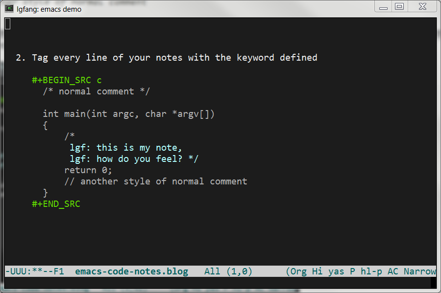

Taking Notes for Source Code in Emacs
Table of Contents
1 Intro
Studying/maintaining large software projects often demands reading loads of source code. That renders taking notes for the source code inevitable. This article enumerates some techniques which are useful for Emacs users when taking such kind of notes. It also gives a patch to include certain functions of a source file.
In the following sections, I assume you are already familiar with the basics of Emacs and org mode. Also, please note the Emacs/org version I am using (listed at the end of this web page). And, I do encourage you to copy 9 into your Emacs buffer and try to move around to get a feel about it. The exported html page lost many links.
At last, almost everything in this article is from org manual. Turn to it for more details if you need.
2 Highlight my notes
The most basic requirement might be copying a block of code into the note file (orgmode) and add notes among lines of the code.
This is simple. The most hard thing to me is rather find a proper face for my notes. The following is an example.
2.1 Add this configure to your org-mode hook.
(highlight-lines-matching-regexp "lgf:" org-document-info)
2.2 Tag every line of your notes with the keyword defined
/* normal comment */ int main(int argc, char *argv[]) { /* lgf: this is my note, lgf: how do you feel? */ return 0; // another style of normal comment }
2.3 The look in orgmode
In case you want to take a look at the output before getting your hands wet, here is a screen-shot

2.4 Make it "fill" better
A minor issue of the previous highlighting solutions is: if your notes extend more than one line, you definitely want the fill-paragraph can deal with it.
The code snippet below highlights the configuration needed for C code, refer to my configure file for details.
(defconst lgfang-c-style '((c-offsets-alist . ((c . 1) ; "c" for continue of comment, NOT "clanguage" ;; other offsets )) (c-block-comment-prefix . "lgf: ") (c-comment-prefix-regexp . ((awk-mode . "#+(lgf: )?") (other ."lgf: \\|//+\\|\\**"))) ;; other style settings ) "lgfang's C Programming Style") (c-add-style "lgfang" lgfang-c-style nil) (add-hook 'c-mode-common-hook (lambda () (c-set-style "lgfang") ;; ... ))
3 Link into source blocks
Go to this uniquely "tagged" line with C-c C-o when point is on the
link.
If you do not want the tag show up in exported html page, add switch "-r" like I did.
Normal internal targets works the same in and out the source block.
Radio targets within source blocks work as well with a trick: copy all the radio targets to the end of the notes so links to radio targets are recognized as usual. However, since Emacs goes to the first match it goes to the the targets in source blocks.
4 Link out from source blocks
Just as usual except that you can only use BEGIN_EXAMPLE (or add
nothing in the BEGIN_SRC line).
1: print 'The following lines are examples of links' 2: 3: # The following line are examples of links 4: 5: # [[*Link out from source blocks]] (link-back) 6: 7: # <<normal internal targets>> 8: 9: # <<<Radio targets>>> here 10: 11: # [[(cross-file-link)]] links into another source block
This means you lost a bunch of handy features.
The good news is, though, that:
- what are lost are not that important since we are taking and will read the notes in Emacs org mode.
- And, we can use string-replace to add/remove language later.
4.1 Circumvent the limitation
If you do want the capability of link out from within src block, here is the hack:
*** org/lisp/org.el.orig 2014-02-26 14:35:17.518888700 +0800 --- org/lisp/org.el 2014-02-26 14:36:26.301814000 +0800 *************** *** 10314,10320 **** application the system uses for this file type." (interactive "P") ;; if in a code block, then open the block's results ! (unless (call-interactively #'org-babel-open-src-block-result) (org-load-modules-maybe) (move-marker org-open-link-marker (point)) (setq org-window-config-before-follow-link (current-window-configuration)) --- 10314,10320 ---- application the system uses for this file type." (interactive "P") ;; if in a code block, then open the block's results ! (unless nil (org-load-modules-maybe) (move-marker org-open-link-marker (point)) (setq org-window-config-before-follow-link (current-window-configuration))
5 Link into source files
Go to 10^th line of lgfang.init.el.
Go to lines matching regexp 'org.*global/' in lgfang.init.el, case
insensitive. C-c <left> (or M-x winner-undo) to back.
Also, see this example of link to a org header
To go back, there are a number of ways:
- In org-mode, right click mouse which is bound to
org-mark-ring-goto. - In other-mode,
M-x org-mark-ring-goto. - Or, usually, just
C-x 0orC-c <left>(winner-undo) is enough.
6 Link within or out from source files
Last but not least (actually this is the most important feature mentioned in this post), you can practically jump among all kinds of text files which Emacs can handle as you can in org files.
- Bind a key
(define-key global-map (kbd "C-x c o") 'org-open-at-point-global) - Make links in source files just as you are in org-mode.
NOTE: this is an example of cross-file link, put it into a source file and try C-x c o (ref:cross-file-link) [[file:./emacs-code-notes.org::*Link within or out from source files]]
C-x c oto follow links in source files
7 Include files
#+INCLUDE: ~/.emacs src emacs-lisp #+INCLUDE: "~/.emacs" :lines "5-10" => Include lines 5 to 10, 10 excluded #+INCLUDE: "~/.emacs" :lines "-10" => Include lines 1 to 10, 10 excluded #+INCLUDE: "~/.emacs" :lines "10-" => Include lines from 10 to EOF
8 Patch to include functions
#+INCLUDE: "~/.emacs" :defun test => include the function "test"
This is my work which makes "#+include:" support the notation of :defun
function_name. Dirty it might be, it works anyway :).
*** ox.el.8.2.10 2015-02-26 15:57:14.198343900 +0800 --- ox.el 2015-02-27 14:09:05.567515300 +0800 *************** *** 3251,3256 **** --- 3251,3262 ---- value) (prog1 (match-string 1 value) (setq value (replace-match "" nil nil value))))) + (func + (and (string-match + ":defun \\(\\w+\\)" + value) + (prog1 (match-string 1 value) + (setq value (replace-match "" nil nil value))))) (env (cond ((string-match "\\<example\\>" value) 'example) ((string-match "\\<src\\(?: +\\(.*\\)\\)?" value) (match-string 1 value)))) *************** *** 3291,3297 **** (let ((ind-str (make-string ind ? )) (contents (org-escape-code-in-string ! (org-export--prepare-file-contents file lines)))) (format "%s#+BEGIN_SRC %s\n%s%s#+END_SRC\n" ind-str env contents ind-str)))) (t --- 3297,3303 ---- (let ((ind-str (make-string ind ? )) (contents (org-escape-code-in-string ! (org-export--prepare-file-contents file lines nil nil func env)))) (format "%s#+BEGIN_SRC %s\n%s%s#+END_SRC\n" ind-str env contents ind-str)))) (t *************** *** 3305,3311 **** (file-name-directory file)) (buffer-string))))))))))))) ! (defun org-export--prepare-file-contents (file &optional lines ind minlevel) "Prepare the contents of FILE for inclusion and return them as a string. When optional argument LINES is a string specifying a range of --- 3311,3317 ---- (file-name-directory file)) (buffer-string))))))))))))) ! (defun org-export--prepare-file-contents (file &optional lines ind minlevel fun env) "Prepare the contents of FILE for inclusion and return them as a string. When optional argument LINES is a string specifying a range of *************** *** 3335,3340 **** --- 3341,3356 ---- (forward-line (1- lend)) (point)))) (narrow-to-region beg end))) + (when (and func env) + (when (string-match "[ \t\n\r]+\\'" env) + (setq env (replace-match "" t t env))) + (when (string-match "\\`[ \t\n\r]+" env) + (setq env (replace-match "" t t env))) + (eval (car (read-from-string (format "(%s-mode)" env)))) + (imenu--make-index-alist) + (imenu (imenu--in-alist func imenu--index-alist)) + (narrow-to-region (progn (end-of-defun) (point)) + (progn (beginning-of-defun) (point)))) ;; Remove blank lines at beginning and end of contents. The logic ;; behind that removal is that blank lines around include keyword ;; override blank lines in included file.
9 Source of this org file
# -*-mode:org;coding:utf-8-*-
# Created: Fang Lungang 02/10/2014
# Modified: Fang Lungang 03/03/2015 13:56>
#+SETUPFILE: ../emacs/orgpub-level-1
#+TITLE: Taking Notes for Source Code in Emacs
* Intro
Studying/maintaining large software projects often demands reading loads of
source code. That renders taking notes for the source code inevitable. This
article enumerates some techniques which are useful for Emacs users when
taking such kind of notes. It also gives a patch to include certain functions
of a source file.
In the following sections, I assume you are already familiar with the basics
of Emacs and org mode. Also, please note the Emacs/org version I am using
(listed at the end of this web page). And, I do encourage you to copy [[*Source
of this org file]] into your Emacs buffer and try to move around to get a feel
about it. The exported html page lost many links.
At last, almost everything in this article is from org manual. Turn to
it for more details if you need.
* Highlight my notes
The most basic requirement might be copying a block of code into the
note file (orgmode) and add notes among lines of the code.
This is simple. The most hard thing to me is rather find a proper face
for my notes. The following is an example.
** Add this configure to your org-mode hook.
#+BEGIN_SRC emacs-lisp
(highlight-lines-matching-regexp "lgf:" org-document-info)
#+END_SRC
** Tag every line of your notes with the keyword defined
#+BEGIN_SRC c
/* normal comment */
int main(int argc, char *argv[])
{
/*
lgf: this is my note,
lgf: how do you feel? */
return 0;
// another style of normal comment
}
#+END_SRC
** The look in orgmode
In case you want to take a look at the output before getting your hands wet,
here is a screen-shot
#+ATTR_HTML: :width 600
[[./emacs-screen/highlight-notes-in-org.png]]
** Make it "fill" better
A minor issue of the previous highlighting solutions is: if your notes
extend more than one line, you definitely want the fill-paragraph can
deal with it.
The code snippet below highlights the configuration needed for C code,
refer to [[file:conf-wrapper.blog][my configure file]] for details.
#+BEGIN_SRC emacs-lisp
(defconst lgfang-c-style
'((c-offsets-alist
. ((c . 1) ; "c" for continue of comment, NOT "clanguage"
;; other offsets
))
(c-block-comment-prefix . "lgf: ")
(c-comment-prefix-regexp . ((awk-mode . "#+(lgf: )?")
(other ."lgf: \\|//+\\|\\**")))
;; other style settings
)
"lgfang's C Programming Style")
(c-add-style "lgfang" lgfang-c-style nil)
(add-hook 'c-mode-common-hook
(lambda ()
(c-set-style "lgfang")
;; ...
))
#+END_SRC
* Link into source blocks
Go to [[(link-back)][this uniquely "tagged" line]] with =C-c C-o= when point is on the
link.
If you do not want the tag show up in exported html page, add switch
"-r" like [[src-switch-r][I did]].
[[Normal internal targets]] works the same in and out the source block.
Radio targets within source blocks work as well with a trick: copy all the
radio targets to the end of the notes so links to radio targets are recognized
as usual. However, since Emacs goes to the first match it goes to the the
targets in source blocks.
* Link out from source blocks
Just as usual except that you can only use =BEGIN_EXAMPLE= (or add
*nothing* in the =BEGIN_SRC= line).
#+BEGIN_SRC python -n
print 'The following lines are examples of links'
# The following line are examples of links
# [[*Link out from source blocks]] (link-back)
# <<normal internal targets>>
# <<<Radio targets>>> here
# [[(cross-file-link)]] links into another source block
#+END_SRC
This means you lost a bunch of handy features.
The good news is, though, that:
1. what are lost are not that important since we are taking and will
read the notes in Emacs org mode.
2. And, we can use string-replace to add/remove language later.
** Circumvent the limitation
If you do want the capability of link out from within src block, here is the
hack:
#+BEGIN_SRC diff
,*** org/lisp/org.el.orig 2014-02-26 14:35:17.518888700 +0800
--- org/lisp/org.el 2014-02-26 14:36:26.301814000 +0800
,***************
,*** 10314,10320 ****
application the system uses for this file type."
(interactive "P")
;; if in a code block, then open the block's results
! (unless (call-interactively #'org-babel-open-src-block-result)
(org-load-modules-maybe)
(move-marker org-open-link-marker (point))
(setq org-window-config-before-follow-link (current-window-configuration))
--- 10314,10320 ----
application the system uses for this file type."
(interactive "P")
;; if in a code block, then open the block's results
! (unless nil
(org-load-modules-maybe)
(move-marker org-open-link-marker (point))
(setq org-window-config-before-follow-link (current-window-configuration))
#+END_SRC
* Link into source files
Go to [[file:lgfang.init.el::10][10^th line of lgfang.init.el]].
Go to [[file:lgfang.init.el::/org.*global/][lines matching regexp 'org.*global/' in lgfang.init.el]], case
insensitive. =C-c <left>= (or M-x winner-undo) to back.
Also, see this [[(cross-file-link)][example of link to a org header]]
To go back, there are a number of ways:
- In org-mode, right click mouse which is bound to =org-mark-ring-goto=.
- In other-mode, =M-x org-mark-ring-goto=.
- Or, usually, just =C-x 0= or =C-c <left>= (=winner-undo=) is enough.
* Link within or out from source files
Last but not least (actually *this is the most important feature
mentioned in this post*), you can practically jump among all kinds of
text files which Emacs can handle as you can in org files.
1. Bind a key
#+BEGIN_SRC emacs-lisp
(define-key global-map (kbd "C-x c o") 'org-open-at-point-global)
#+END_SRC
2. Make links in source files just as you are in org-mode.
# <<src-switch-r>>
#+BEGIN_EXAMPLE -r
NOTE: this is an example of cross-file link, put it into a source file
and try C-x c o
(ref:cross-file-link)
[[file:./emacs-code-notes.org::*Link within or out from source files]]
#+END_EXAMPLE
3. =C-x c o= to follow links in source files
* Include files
#+BEGIN_EXAMPLE
,#+INCLUDE: ~/.emacs src emacs-lisp
,#+INCLUDE: "~/.emacs" :lines "5-10" => Include lines 5 to 10, 10 excluded
,#+INCLUDE: "~/.emacs" :lines "-10" => Include lines 1 to 10, 10 excluded
,#+INCLUDE: "~/.emacs" :lines "10-" => Include lines from 10 to EOF
#+END_EXAMPLE
* Patch to include functions
#+BEGIN_EXAMPLE
,#+INCLUDE: "~/.emacs" :defun test => include the function "test"
#+END_EXAMPLE
This is my work which makes "#+include:" support the notation of =:defun
function_name=. Dirty it might be, it works anyway :).
#+include: "./patches/ox.el.patch" src diff
* Source of this org file
# Cool, no infinite recursion.
# "text" instead of "org" to show things behind the scene
#+include: ./emacs-code-notes.org src text
* Radio targets :noexport:
<<<Radio targets>>>